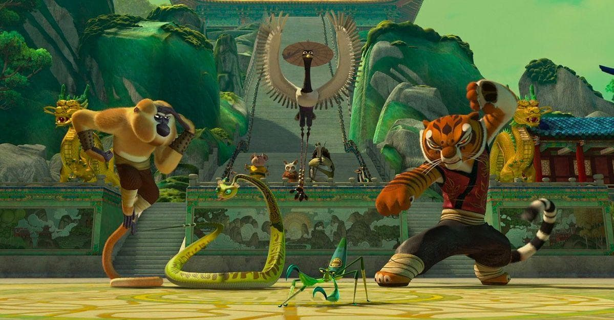
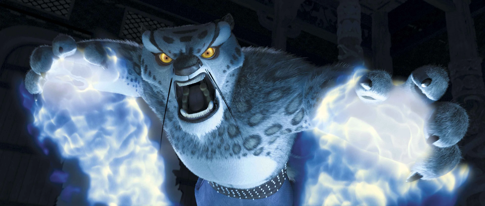
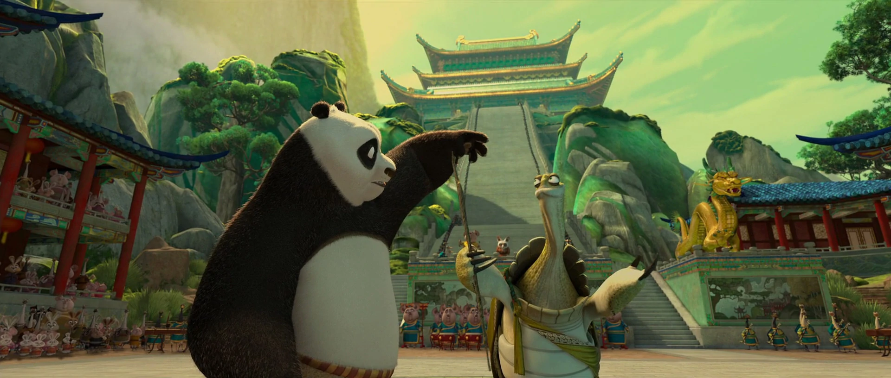
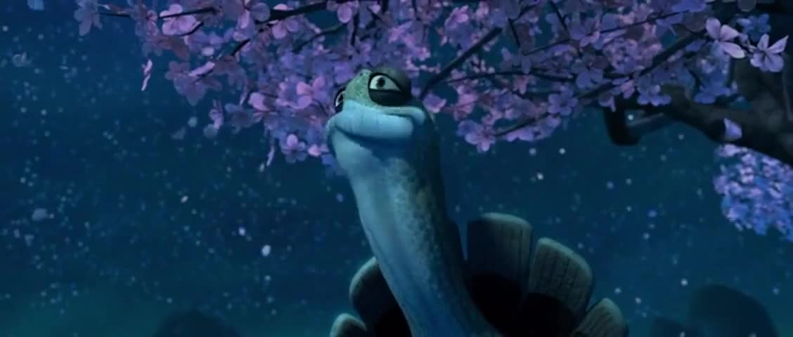

Sinopsis Film

Suatu ketika, perguruan kung fu ternama yang dipimpin oleh Master Oogway (yang berbentuk kura-kura), mengadakan sayembara untuk mencari “Sang Pendekar Naga“.
Pendekar Naga ini lah yang nantinya berhak mendapatkan “Scroll Naga”, yang berisikan rahasia kekuatan tak terbatas. Dia juga yang nantinya ditunjuk untuk mengalahkan Tai Lung si macan tutul salju, mantan murid sekaligus anak angkat dari Master Shifu (yang berbentuk panda berwarna merah), wakil dari Master Oogway.

Tai Lung menjadi jahat karena tidak terpilih sebagai “The Chosen one” yang berhak mendapatkan Scroll Naga, hingga akhirnya dia dipenjara karena kejahatannya. Namun ternyata Tai Lung berhasil melarikan diri dari penjara, yang telah iramalkan oleh Master Oogway melalui mimpinya.Po si panda, pergi untuk mengikuti sayembara.

Di luar dugaan, ternyata Po berhasil menjadi murid perguruan tersebut dan dianggap sebagai Sang Pendekar Naga. Di sana Po bertemu dengan Furious Five, 5 orang murid perguruan, jagoan kung fu yang idolanya. 5 jagoan itu adalah: Tigress, Monkey, Mantis, Viper dan Crane.
Tetapi ternyata Furious Five menganggap Po tak layak menjadi Pendekar Naga dan mengalahkan Tai Lung. Begitu pun dengan Master Shifu. Karena hal ini, Po menjadi tidak percaya diri. Dia merasa tubuhnya yang gendut sebagai kelemahan terbesarnya untuk bisa belajar kung fu.

Namun setelah Master Oogway meninggal, Master Shifu pun mulai percaya, bahwa Po memang bisa menjadi Pendekar Naga. Ia kemudian melatih Po dengan trik khusus yang berbeda dengan cara ketika ia masih melatih Furious Five.
Lalu bagaimana dengan Scroll Naga? Mampukah Po menguasai rahasia di dalamnya dan mengalahkan Tai Lung?
Balik Ke Atas